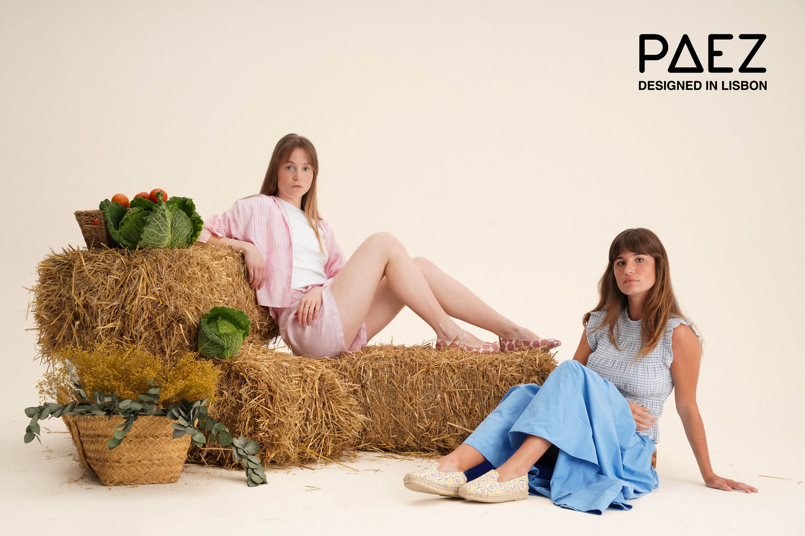
cru, de raíz (ROOTS) is a footwear collection developed for PAEZ after being selected as one of the winning proposals of an open call in collaboration with the Faculdade de Belas-Artes da Universidade de Lisboa.
Vegetables are often framed as obligation rather than delight. cru, de raíz begins by questioning that perception, looking at everyday ingredients through a different lens. Their irregular silhouettes, saturated colours and tactile surfaces become the starting point for a visual language that celebrates what is usually overlooked.
Beyond nourishment, vegetables carry stories of care, seasonality and collective rituals. They grow slowly, demand patience, and remind us of a way of living more closely connected to the rhythms of the earth. Accessible and deeply rooted in cultures around the world, they embody an understated richness that often disappears behind convenience and processed alternatives.
Rather than treating them as decorative motifs, the collection places them at its centre as symbols of the essential. Their imperfections become character, their textures become pattern, and their vibrancy challenges the assumption that simplicity is synonymous with dullness. cru, de raíz is ultimately an invitation to rediscover beauty in what already surrounds us: what grows from the ground, what takes time, and what has always sustained us.
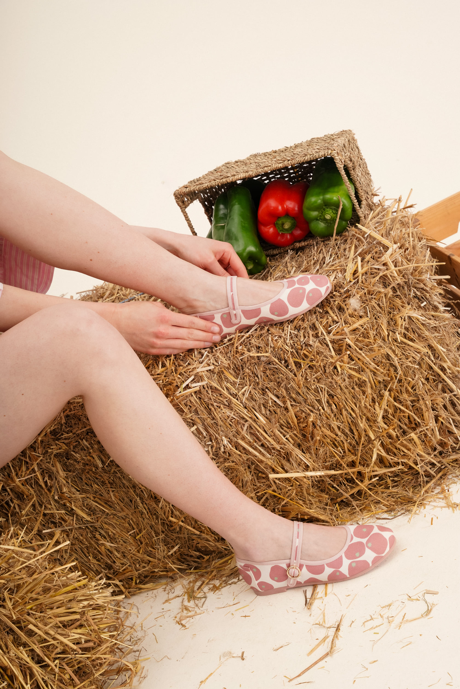
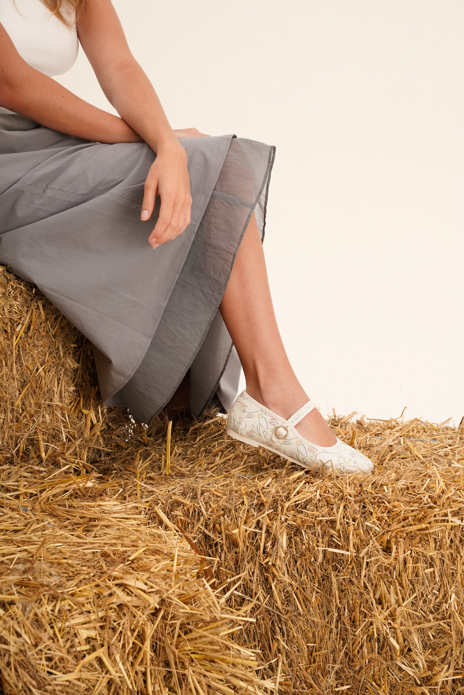
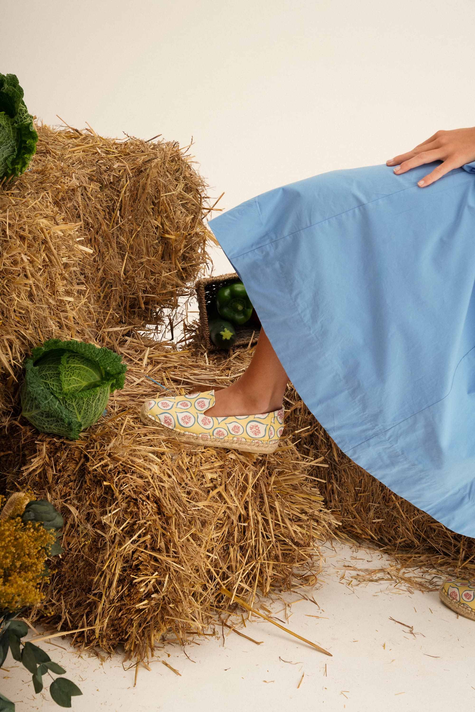
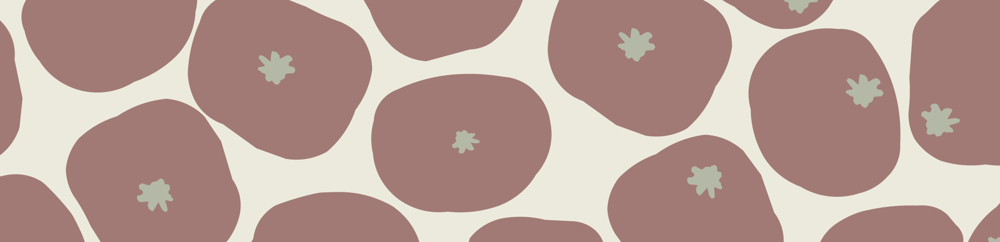
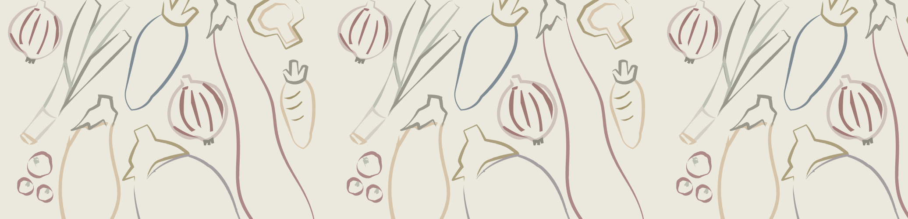
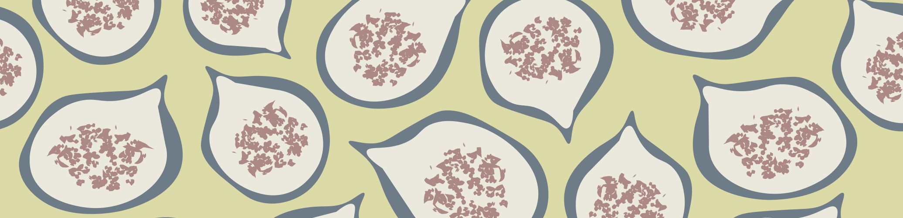
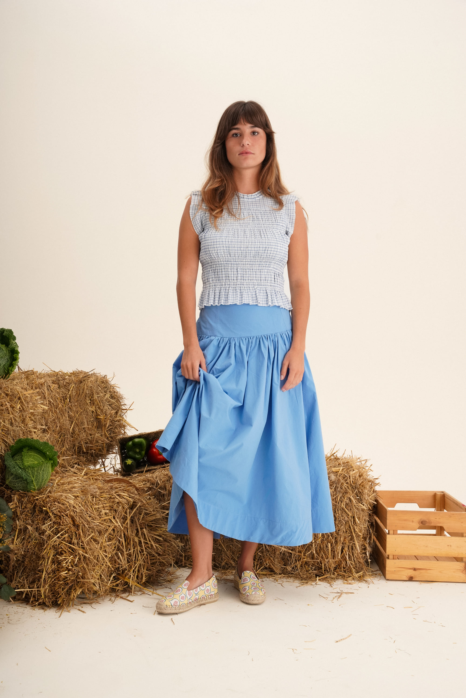
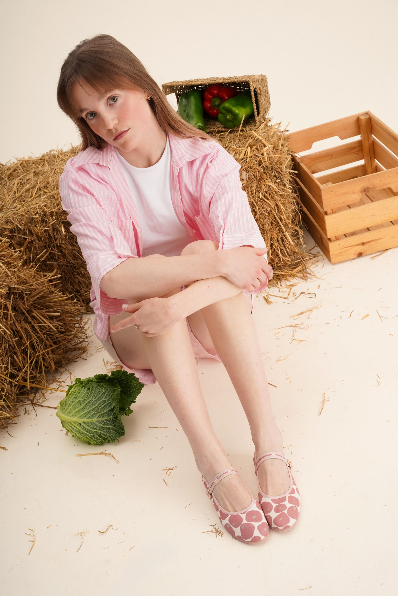
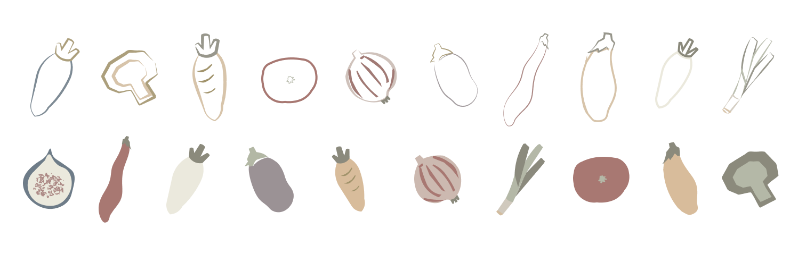
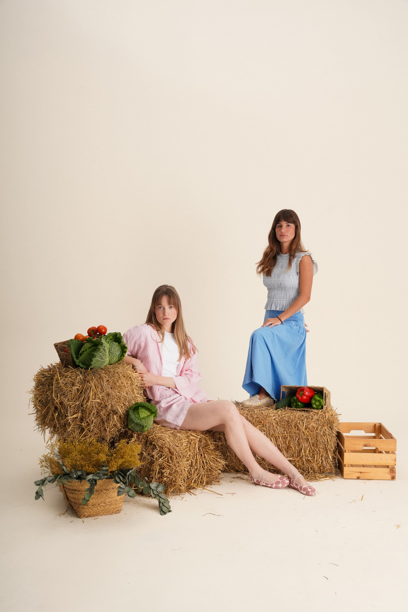
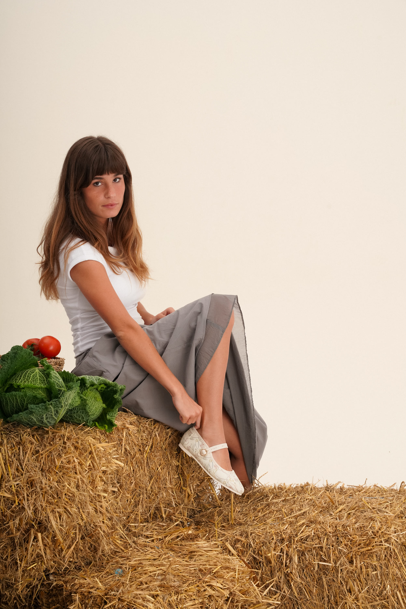